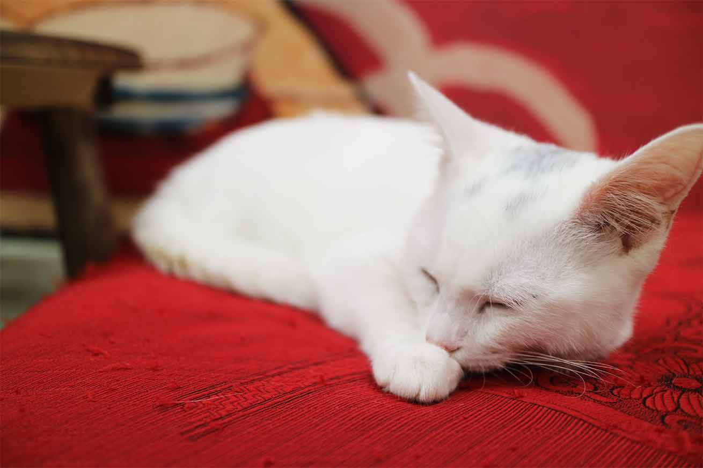
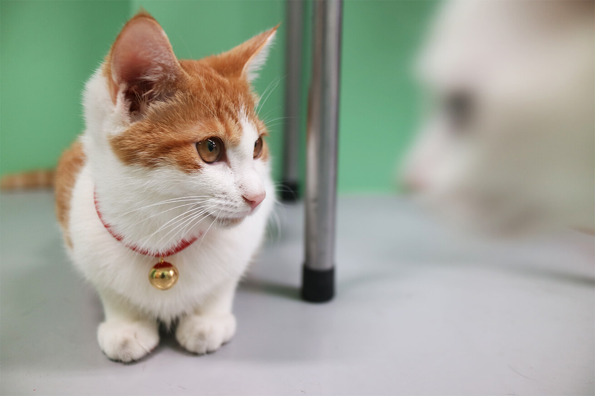
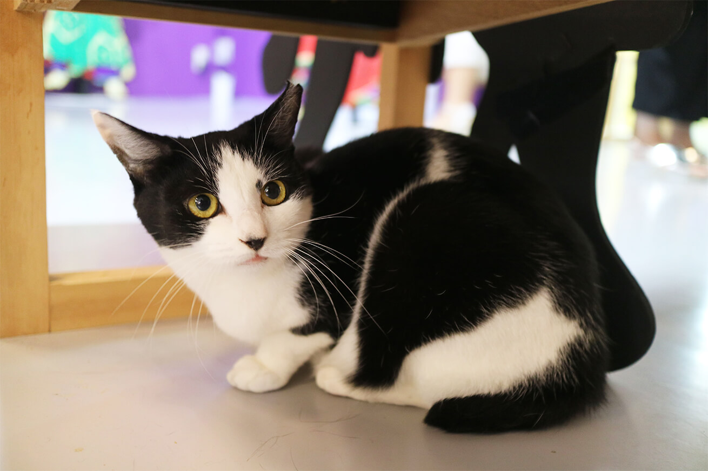
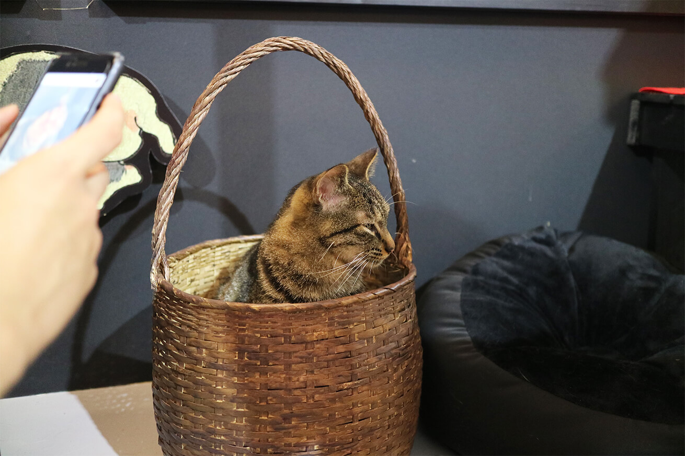
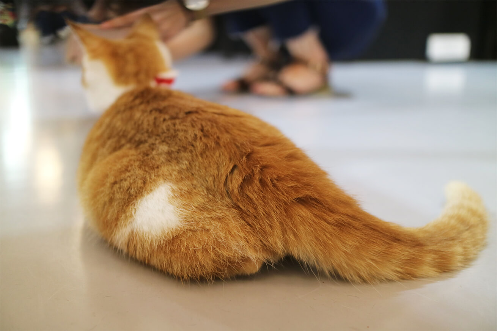
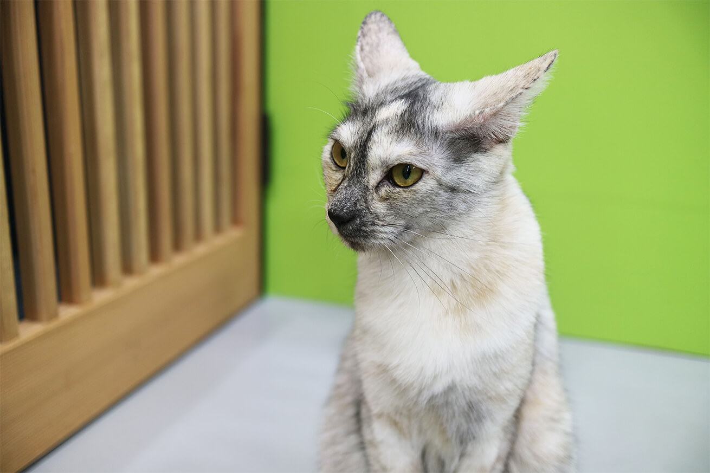
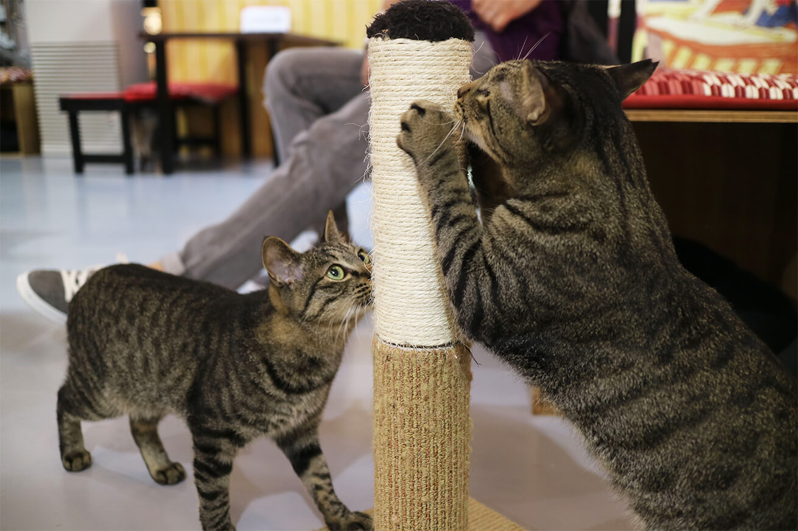
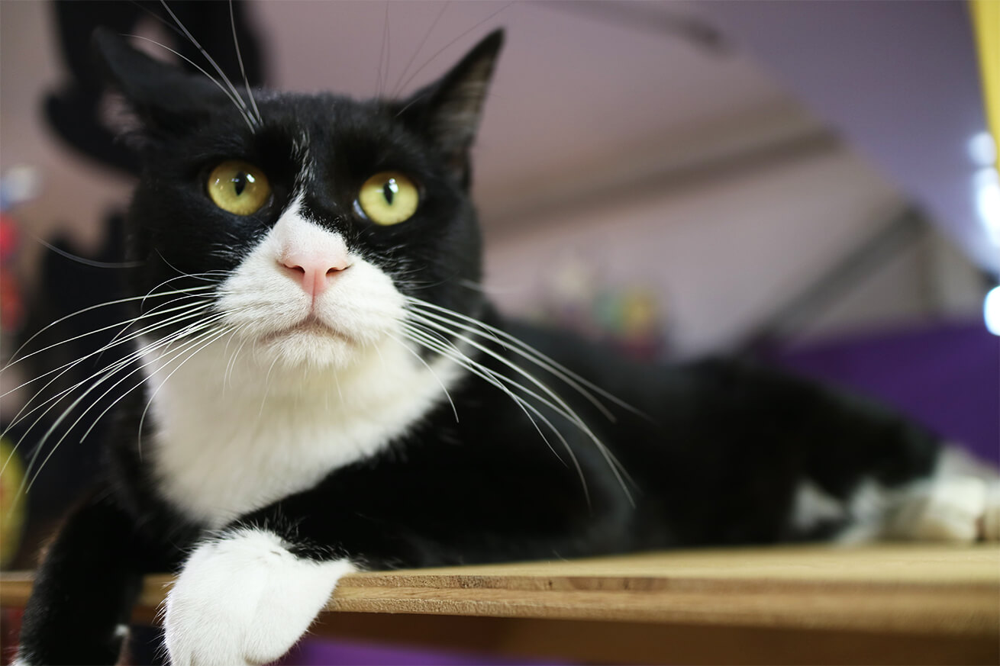
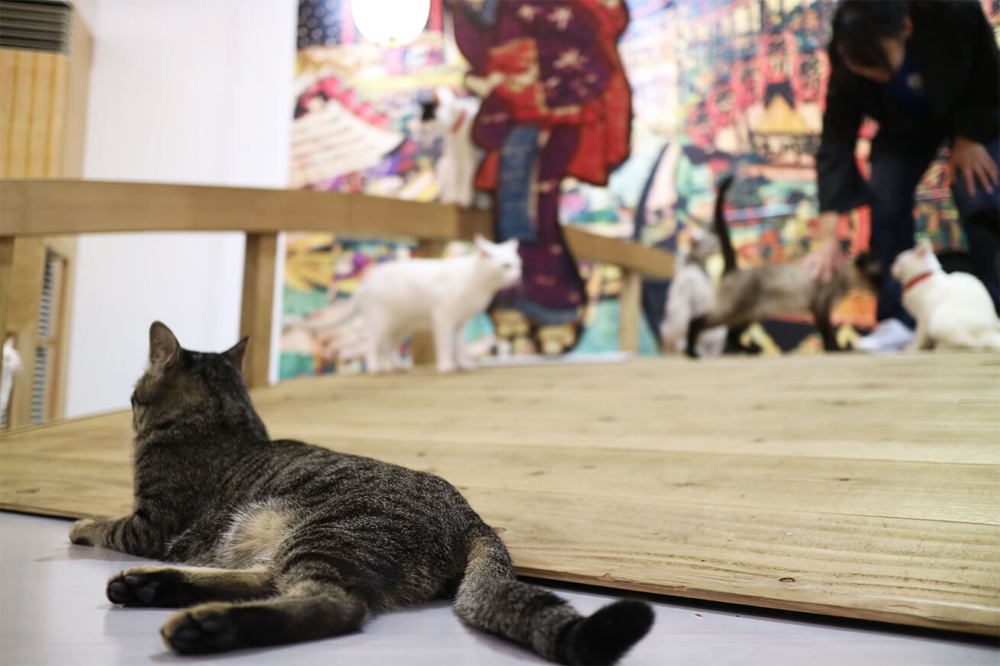
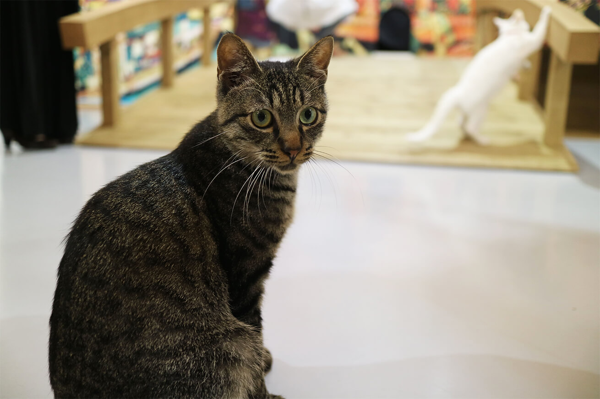

「江戸ねこ茶屋」に行って来ました。
前提として僕はネコ好きですがネコアレルギー持ちで、発症すると丸一日は動けなくなります。なのでいつもペットショップでガラス越しに見たり、youtubeでネコ動画を観たりしてネコに触りたい、一緒に遊びたい欲求を我慢しています。
でもね、今回は
「江戸」と「ねこ」と「茶屋」
この組み合わせはそそられますよ。
うん、触らなければ大丈夫（だと思う…。）
もう行きたい衝動が勝ってしまい行くことにしました。
動画では8/31（金）までとなっていますが、12/2（日）まで延長されています。
場所はJR両国駅前を出て本当すぐの所です。
一応メガネを装着をして肌の露出を抑えるために夏なのにパーカーに長ズボンを履いて準備万端。（そこまでして行くのって感じですが…）
ちなみに江戸ねこ茶屋のネコの多くは保護ネコで、里親としてネコを引き取ることも可能だそうです。
店員さんからの注意事項の説明を聞いた後、扉を開けて入店。
早速数匹の猫がお出迎えしてくれて（というかただ外に出たいだけ？）もうね、自然とにやけちゃう。 色々なネコがいますがみんな人を気にせずみんな自由に過ごしている感じがすごくいいです。
触れない分、ここぞとばかり写真を撮ったので一部公開します。
         最後に
やっぱり触れないのはウズウズしてしまいますが、間近で見るネコは可愛いという言葉しか出てこないです。 おかげで心が癒されました。みんな素敵な飼い主さんが見つかるといいな。
無事ネコアレルギーも発症しなかったし、これなら猫カフェはいけるかも。